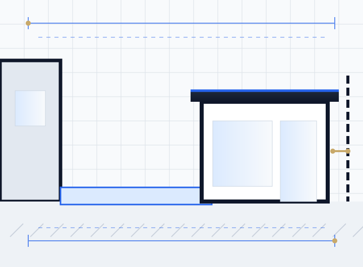

Most garden rooms in England do not need planning permission if they are single storey, behind the front of the house, used for purposes incidental to the home (an office, gym or studio, not a bedroom), cover no more than half the garden, and stay within the height limits: 2.5 m maximum within 2 m of a boundary, otherwise 4 m with a dual pitched roof or 3 m for other roofs, with eaves no higher than 2.5 m. Listed buildings, flats and some designated areas have tighter rules. Building regulations usually do not apply to a garden room under 15 m² with no sleeping accommodation.
Garden rooms are often sold as the project that never needs planning. Frequently that is true. But the permitted development rules for outbuildings are stricter than many suppliers explain, and the two conditions that catch people out are height and use. A pitched roof near a fence breaks the 2.5 metre limit almost immediately, and a garden room with a bed, shower and kitchen that someone lives in is a separate dwelling in planning terms.
This guide explains when you need planning permission for a garden room, the exact limits, building regulations, and what changes for annexes, home businesses and protected areas. It covers houses in England.
Key takeaways
- Garden rooms fall under Class E permitted development for outbuildings.
- Within 2 m of any boundary, the whole building must be no more than 2.5 m high.
- The use must be incidental to the house. Sleeping accommodation or a self-contained annexe needs planning permission.
- Flats, maisonettes and listed buildings do not get Class E rights.
- Building regulations are usually not needed under 15 m², and often not under 30 m² if the room is 1 m from the boundary or built from non-combustible materials.
- A lawful development certificate is the cleanest proof that your garden room is permitted development.
Do you need planning permission for a garden room?
Usually not, provided every Class E condition is met. Class E of Schedule 2, Part 1 of the General Permitted Development Order 2015 allows householders to build outbuildings "required for a purpose incidental to the enjoyment of the dwellinghouse". Garden offices, studios, gyms, summer houses, sheds and hobby rooms normally qualify. If any one condition is broken, the whole building needs planning permission.
Garden room permitted development limits
| Rule | Limit |
|---|---|
| Storeys | Single storey only |
| Position | Not forward of the principal elevation (usually the front of the house) |
| Height within 2 m of a boundary | Max 2.5 m overall |
| Height elsewhere | Max 4 m with a dual pitched roof, 3 m for any other roof |
| Eaves height | Max 2.5 m |
| Garden coverage | All outbuildings and extensions together must not cover more than 50% of the land around the original house |
| Balconies and verandas | Not allowed; decking or platforms max 0.3 m high |
| Use | Incidental to the house, not separate living accommodation |
Height is measured from the highest ground level next to the building, so on a sloping garden the uphill side sets the base. A typical flat-roof garden office built 2.5 m high can sit right up to the fence. A pitched roof design usually needs to move at least 2 m away from every boundary.
When a garden room needs planning permission
- It breaks a height or position limit, for example a pitched roof within 2 m of a fence, or a building in front of the house.
- It includes sleeping accommodation or is used as independent living space.
- The property is a flat or maisonette, which has no householder permitted development rights.
- The house is listed. Class E does not apply within the curtilage of a listed building, and listed building consent may also be needed.
- The house is in a conservation area, National Park, National Landscape, World Heritage Site or the Broads and the outbuilding sits between the side of the house and the boundary. In National Parks, National Landscapes, World Heritage Sites and the Broads, outbuildings more than 20 m from the house are also limited to 10 m² in total.
- Permitted development rights have been removed by a planning condition or an Article 4 direction. This is common on newer estates.
- The garden would be more than half covered once existing extensions and outbuildings are counted.
For the wider rules, see permitted development vs planning permission and permitted development rights in 2026.
Garden room annexes and granny annexes
An annexe is where most garden room projects cross into planning permission. The test is whether the building is incidental to the house (permitted development), ancillary accommodation used by the household but not independently (usually needs planning permission), or a separate dwelling (always needs planning permission).
| Use | Planning position |
|---|---|
| Home office, gym, studio, playroom, store | Incidental, usually permitted development |
| Occasional guest room with a bed | Sleeping accommodation is not incidental, so planning permission is usually needed |
| Granny annexe used by a family member, sharing the house's address and services | Ancillary accommodation, needs planning permission, often with a condition tying it to the main house |
| Self-contained unit let or lived in independently | New dwelling, needs full planning permission |
Councils look at what facilities are provided (bedroom, kitchen, bathroom), how the building relates to the house, and whether it could be occupied separately. An annexe application needs a full set of plans and elevations, and often a supporting statement explaining how it will be used.
Running a business from a garden room
Working from a garden office is normally incidental to the home and does not need planning permission. It can become a material change of use if the business changes the character of the property: regular visiting clients or customers, staff who do not live there, deliveries, noise or signage. A therapist seeing a few clients may be fine, while a salon or gym with frequent customers is likely to need permission. If in doubt, ask the council or apply for a lawful development certificate.
Do garden rooms need building regulations?
Detached single storey outbuildings are often exempt under Schedule 2 of the Building Regulations 2010:
| Garden room | Building regulations |
|---|---|
| Under 15 m², no sleeping accommodation | Usually exempt |
| 15 m² to 30 m², no sleeping accommodation, at least 1 m from any boundary or substantially non-combustible | Usually exempt |
| Over 30 m² | Needs approval |
| Any size with sleeping accommodation | Needs approval |
Even when the building is exempt, new electrical circuits must comply with Part P and be installed and certified by a competent electrician, and drainage for a WC or sink needs to meet the regulations. Our guide to building regulations drawings explains what is needed when approval applies.
Should you get a lawful development certificate?
It is optional, but a lawful development certificate is the best protection if you want certainty. It confirms in writing that the garden room is permitted development, which settles disputes with neighbours and answers questions from buyers' solicitors when you sell. The application needs a site plan showing boundary distances, and elevations showing the height, so the council can check every limit.
What drawings a garden room application needs
- Location plan at 1:1250 with the site edged red.
- Block plan at 1:500 or 1:200 showing the garden room footprint and its distance to every boundary.
- Floor plan showing the internal layout and use of each space.
- Elevations showing overall height, eaves height and materials, measured from the highest adjacent ground.
- Section on sloping gardens to show ground levels.
Our garden rooms and outbuildings service draws these against the limits that apply to your plot. If the room is part of a larger project, see planning drawings for a house extension, or consider whether a conservatory or wrap around extension would suit the space better.
What if your garden room is already built?
If a garden room was built outside the limits, the council can require changes or removal. The usual fix is a retrospective planning application, sometimes with the height reduced to make it acceptable, or a lawful development certificate if the building complies after all. Acting before an enforcement notice is served keeps more options open.
How we help
We check your plot against Class E, measure boundary distances and ground levels, and draw the garden room so it stays inside the limits wherever possible. Where planning permission is needed, for example for an annexe, we prepare the full application set. We work remotely across England, including London, Bristol and Leeds. Send us your plans or a photo of the garden for a quick check.
Frequently asked questions
Do I need planning permission for a garden room?
Usually not, if it is single storey, behind the front of the house, no more than 2.5 m high within 2 m of a boundary, used for purposes incidental to the house, and the garden is not more than half covered by buildings. Flats, listed buildings and some designated areas have tighter rules.
How high can a garden room be without planning permission?
No more than 2.5 m overall if any part is within 2 m of a boundary. Further away, up to 4 m with a dual pitched roof or 3 m with any other roof, with eaves no higher than 2.5 m.
Can I sleep in my garden room?
Not under permitted development. Sleeping accommodation is not incidental to the house, so a garden room used as a bedroom usually needs planning permission and building regulations approval.
Does a granny annexe need planning permission?
Yes. An annexe used as living accommodation needs planning permission, often with a condition tying it to the main house. A self-contained unit lived in independently is treated as a new dwelling.
Do garden rooms need building regulations?
Usually not if under 15 m² with no sleeping accommodation, or 15 m² to 30 m² with no sleeping accommodation and at least 1 m from boundaries or made of non-combustible materials. Electrical work must still comply with Part P.
Can I put a garden room in front of my house?
Not under permitted development. Outbuildings forward of the principal elevation, usually the front of the house, need planning permission.
Can I run a business from a garden office?
Working from home in a garden office is usually fine. Planning permission may be needed if the business brings regular customers, staff, deliveries or noise that change the character of the property.